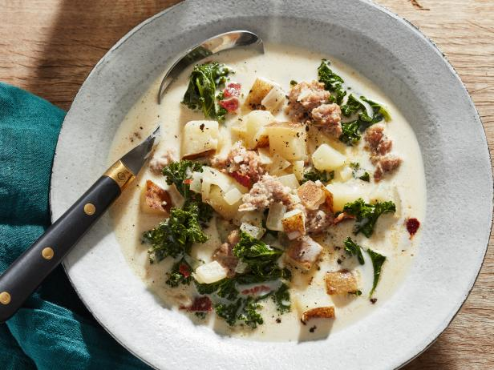

Zuppa Toscana

Zuppa Toscana is perfect for those cold rainy nights!
This dish takes about 1 hour to make.
Ingredients
- 1 pound bulk mild Italian sausage
- 1 1/4 teaspoons crushed red pepper flakes
- 4 slices bacon, cut into 1/2 inch pieces
- 1 large onion, diced
- 1 tablespoon minced garlic
- 5 (13.75 ounce) cans chicken broth
- 6 medium potatoes, thinly sliced
- 1 cup heavy cream
- 1/4 bunch fresh spinach, tough stems removed
Cooking Instructions
- Cook Italian sausage and red pepper flakes in a Dutch oven over medium-high heat until crumbly,
browned, and no longer pink, 10 to 15 minutes. Drain and set aside.
- Cook bacon in the same Dutch oven over medium heat until crisp, about 10 minutes. Drain, leaving
a few tablespoons of drippings with the bacon in the bottom of the Dutch oven. Stir in onions and
garlic; cook until onions are soft and translucent, about 5 minutes.
- Stir in chicken broth and bring to a boil over high heat. Add potatoes and simmer until fork tender,
about 20 minutes. Reduce heat to medium; stir in cream, cooked sausage, and spinach. Cook and
stir until spinach has wilted and sausage is warmed through; serve.